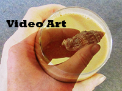
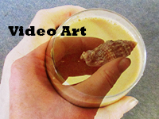

Alicia Breinke is a Sacramento-based Digital Media Arts student currently attending San Jose State University. Her design work is inspired by the works of the fantasy author known as Neil Gaiman, a renowned violinist known as Lindsey Stirling, various social issues, and various personal moments. Most of these works incorporate elements of digital photography and graphic design. In addition to continously creating new works while working towards a BFA in Digital Media Arts, Alicia has served as an intern at an art gallery known as Blue Line Arts. Consecutively, she has worked twice as a graphic designer as well as an art critic for a nationally-renowned literary-art magazine known as the AMERICAN RIVER REVIEW. Some of Alicia's accomplishments include having photography work featured in this magazine as well as in two Second Saturday Shows in the Sacramento Art Community.

 
